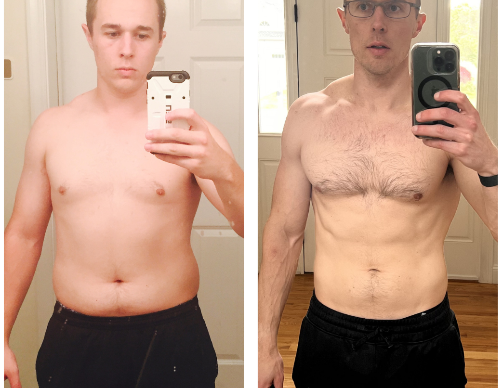

One year I was a competitive athlete. The next I was 40 pounds heavier, exhausted, and no specialist could tell me why.
I’m Andrew Martin, a biologist and the founder of Second Prime. I started as a competitive athlete. Then an autoimmune condition derailed me. The weight piled on, about 40 pounds of it, and that is me on the left.
My energy was gone. I had erectile dysfunction. Red spots would flare across my skin and turn an ordinary day into a debilitating one. I did what you are supposed to do: I went to the doctors. I spent close to $20,000 going from specialist to specialist, and not one of them could tell me what was actually wrong. So I stopped waiting for an answer and went looking for it myself.
I ran the same panel we run on every client, more than 1,000 biomarkers, and I read it with my background in biology and biochemistry. On paper I was a healthy man in my early thirties. The blood said something else.
My hs-CRP, the marker for system-wide inflammation, came back at 15.0. Optimal is under 1. My testosterone was 380, low for a man my age. My homocysteine sat at 15, high enough to matter for the heart and the brain, and a sign my body wasn’t methylating the way it should. There was a stack of nutrient deficiencies. And underneath all of it, an active Epstein-Barr infection, the virus most people carry quietly, running hot in my system.
The Epstein-Barr was the thread that tied it together. A chronic viral load keeps the immune system switched on, and that constant low-grade fight shows up as inflammation, which is exactly what a CRP of 15 was telling me. Inflammation suppresses testosterone and pushes the body to store fat. It was also driving the autoimmune flares and the red spots. The nutrient deficiencies and the high homocysteine left my body without the raw materials to fight back.
Every specialist I saw chased a single symptom and missed the cause. No one tested for the virus. No one connected the deficiencies to the inflammation to the hormones. That is the gap I had to close myself.
Find the deficiencies. The panel showed exactly what my body was missing. I matched a targeted supplement to each one, including methylation support to bring the homocysteine down, instead of guessing with a generic stack.
Go after the virus. I built the supplementation and nutrition specifically to clear the Epstein-Barr, the thing every doctor had missed, and to take the inflammation down with it.
Rebuild with food. I changed what I ate to lower inflammation and feed the recovery, not fight it.
Same protocol I’d build for you. Here is what it did for me.

“I dropped about 40 pounds. My energy is back. The autoimmune flares are gone, and everything that had quietly stopped working started working again. The virus that every specialist missed no longer shows up on my labs.”
No one is coming to figure your health out for you. The answers are already in your data. You just need someone who can read them.